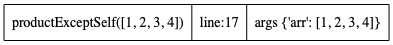
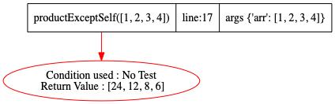

def productExceptSelf(arr):
n=len(arr)
prefarr=[1]*(n+1) # watchvar prefarr
# prefarr[0]=arr[0]
for i in reversed(range(n)):
prefarr[i]=prefarr[i+1]*arr[i]
ans=[1]*n # watchvar ans
p=arr[0]
ans[0]=prefarr[1]
for i in range(1,n):
ans[i]=p*prefarr[i+1]
p*=arr[i]
return ans
def go():
# https://leetcode.com/problems/product-of-array-except-self/
productExceptSelf([1,2,3,4])
Step:1,New function call at Line:17
Code executed: productExceptSelf([1,2,3,4])
Stack Trace generated

Step:2,Return seen at Line:13
Code executed: return ans
Stack Trace generated
